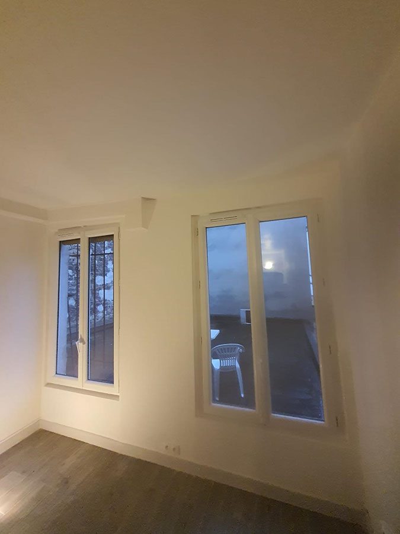

Paris et première couronne (92, 93, 94)
Rénovation partielle ou totale à Paris
Votre projet de rénovation, de la démolition aux finitions.
Zone d’intervention : tout Paris et la petite couronne (Hauts-de-Seine, Seine-Saint-Denis, Val-de-Marne), notamment Ivry-sur-Seine, Vitry-sur-Seine, Villejuif, Alfortville, Charenton-le-Pont, Maisons-Alfort et Le Kremlin-Bicêtre. Précisez la commune ou l’arrondissement de l’immeuble.


Réponse immédiate sur WhatsApp
Extrêmement réactifs : vous êtes pris en charge dès réception de votre message.
Devis sous 24 h
Votre devis vous est envoyé dès que nous avons les informations nécessaires à l’intervention.
Avant et après : rénovation intérieure
Rénovation complète d’appartement
Dégagement en pierre
Cuisine
Crédence en carrelage métro et plan de travail en bois
Cuisine
Cuisine créée dans une pièce vide, avec un bar en bois
Cuisine
Cuisine refaite après démolition, sol en carreaux de ciment
Revêtement de sol
Sol des toilettes refait en parquet
Salle de bain
WC suspendu posé sur un bâti-support
Salle de bain
Grande douche vitrée et meuble vasque
Salle de bain
Salle de bain refaite, douche à la place de la baignoire
Mur en colombage
Réparation de parquet
Parquet réparé après un dégât des eaux
Parquet gonflé : le réparer ou le changer ?Hall d’immeuble
Parties communes : plafond refait
Rénover la cage d’escalier et le hall d’un immeubleCage d’escalier
Renfort en béton armé dans une cage d’escalier d’immeuble
Nos interventions en copropriétéAvant et après : rénovation extérieure
Mur en pierre
Réfection d’un mur en pierre en sous-sol, avec un enduit à la chaux.


Muret
Pose IPN
Rénovation allée-terrasse
Reprise d’étanchéité en sous-œuvre
Ravalement de façade
Nos prestations de rénovation
L’entreprise tous corps d’état A.T.C. BAT réalise tous les travaux de rénovation intérieure et extérieure, pour les professionnels comme pour les particuliers.
A.T.C. BAT intervient dans des copropriétés pour le remplacement de colonne, la réfection de cage d’escalier ou la réparation d’étanchéité de toit par exemple.
A.T.C. BAT réalise également des modifications (pose de poutres IPN) ou des renforcements de structures (étaiement en milieu occupé).
Voici une liste non exhaustive de nos prestations de rénovation générale pour les professionnels, les particuliers ou les copropriétés.
- aménagement intérieur
- aménagement extérieur
- aménagement de combles
- travaux de maçonnerie générale
- modification de structure
- pose de revêtements de sols
- réparation de parquet
- revêtements muraux
- pose de carrelage et de faïence
- travaux d’isolation intérieure
- pose de fenêtres
- travaux de peinture
- réparation d’étanchéité de toit
- extension de maison
Questions fréquentes
Quels travaux de rénovation réalisez-vous ?
Tous les travaux de rénovation intérieure et extérieure, de la démolition aux finitions : maçonnerie, modification de structure, aménagement de combles, sols et parquet, carrelage et faïence, isolation intérieure, fenêtres, peinture, réparation d’étanchéité de toit, extension de maison.
Rénovez-vous les parties communes des immeubles ?
Oui. A.T.C. BAT intervient dans des copropriétés, par exemple pour la rénovation d’un hall, la réfection d’une cage d’escalier, le remplacement de colonne ou la réparation d’étanchéité de toit.
Travaux en copropriété pour les syndics et les gestionnaires
Faites-vous des modifications ou des renforcements de structure ?
Oui : pose de poutres IPN au-dessus d’une ouverture, renfort en béton armé dans une cage d’escalier, étaiement en milieu occupé.
Remettez-vous en état après un dégât des eaux ?
Oui : plafonds, murs, peinture, sols et parquet. Si personne n’a encore trouvé d’où vient l’eau, nous cherchons la fuite, puis nous réparons et remettons en état, jusqu’aux finitions. Vous gardez le même interlocuteur jusqu’au bout.
Remise en état des plafonds, murs et sols après un dégât des eaux
Où intervenez-vous, et pour qui ?
À Paris et en première couronne : Hauts-de-Seine (92), Seine-Saint-Denis (93) et Val-de-Marne (94). Nous travaillons pour les professionnels, les particuliers et les copropriétés.
Comment obtenir un devis ?
Écrivez-nous sur WhatsApp ou par mail avec l’adresse, les pièces concernées et des photos. Devis sous 24 h : votre devis vous est envoyé dès que nous avons les informations nécessaires à l’intervention.
Nos guides
Formulaire de contact
Décrivez la fuite ou les travaux et indiquez le lieu d’intervention. Vous pouvez aussi nous écrire directement par mail.
Pour une réponse rapide : appelez le 06 74 79 07 77 ou écrivez sur WhatsApp
Vos données personnelles
Vos informations servent seulement à répondre à votre demande. Nous les gardons trois ans au plus.
Vos données et vos droitsWhatsApp ou mail
Une réponse rapide sur WhatsApp
Envoyez-nous les informations sur la fuite ou les travaux, avec vos photos. Nous préparons la suite avec vous.
06 74 79 07 77